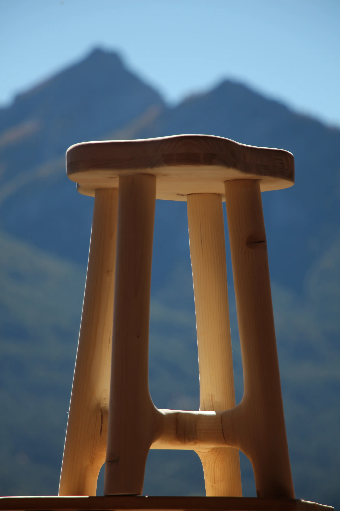

Un tabouret ...
Voila certainement la plus belle piece de ma main. Pour ce projet l'inspiration me viens principalement d'un youtubeur du nom de MakeWithMiles.
Je suis d'abord parti de morceaux de bois carré. Je les ai assemblés pour faire la forme globale. Et ensuite je les ai arrondis à l'aide d'une défonseuse d'abord, puis d'une ponceuse principalement.
